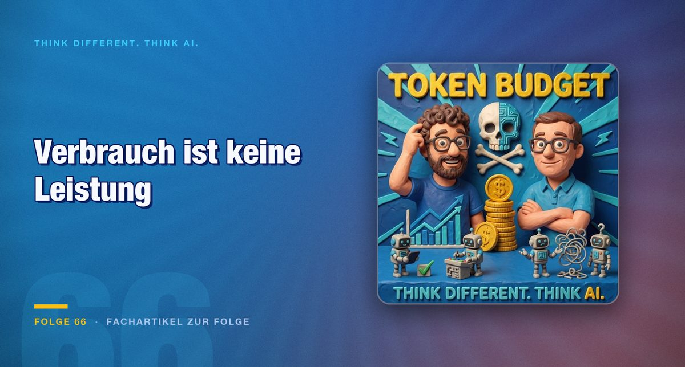

Episode 66 · Feature article on the episode
Token budgets: who consumes a lot has not yet delivered anything
A subscription runs dry, the API bill is higher than the monthly price: token consumption says little about benefit. Why budgets make sense as long as they measure results and not volume.

Jens Scharnetzki works on code for a whole day until the quota of his subscription is used up. The work still has to get done, so he switches to billing per token. By evening, the bill for that one day is higher than what the subscription costs for the whole month. He had not changed his way of working: he lets many agents run in parallel and switches between larger and smaller models.
The episode does not treat this as an outlier, but as a pattern. The providers' pricing models reward whoever consumes a lot, and for a time companies read this consumption as proof of performance. That is now changing. The reason is less the price than the realisation that volume and value are two different quantities.
The bill has more items than the token
Anyone who assesses costs has to put the result alongside them. Mark Zimmermann had a video of two and a half minutes produced and used tokens worth around 200 dollars in one evening. For its purpose, a demonstration, the result was sufficient. Brought to professional quality, it would have cost more. The classic route, however, would have required a briefing, a service provider and rendering time, or one's own working time. According to Mark's assessment, this overall calculation tends to favour the use of AI. The hosts did not calculate it; it remains an estimate from the gut.
Jens Scharnetzki, by contrast, doubts that the subscription models add up for the providers. Anyone who consumes more in one day than the subscription costs per month is in effect getting subsidised computing power. He expects this to change once the providers go public. Both hosts mentioned reports that Anthropic and OpenAI are preparing stock market flotations. The episode does not confirm this; it is their reading.
A second effect comes on top: fast variants cost more. Jens used a model in turbo mode and emptied a 500 subscription in five hours. Several projects ran in parallel, and none of them was completed. From this he draws the conclusion that speed brought nothing where people work over a week anyway. His resolution since then: give the model more time, so that it stays busy throughout, rather than burning tokens in one go.
Token maximizing was the wrong metric
The term emerged at the beginning of the year. In the eyes of some employers, a developer who did not consume millions of tokens counted for little. Jens describes this as a marketing story of the large providers, which explained their own sales with it. Mark reports an acquaintance with five large subscriptions at Anthropic who cannot get by for a week with them. Whoever has used up one subscription signs up for the next and carries on working.
The hosts see that this turned around over the summer. Consumption came to be viewed more critically, partly because of the data centres being built in the USA next to residential areas. At the beginning of November, reports followed that large companies such as Apple, Tesla and Microsoft had cut the budgets for their developers. Mark cited from memory a reduction from 300 to 200 dollars a day and, at Tesla for individual departments, 200 dollars a week. These figures are unconfirmed and were not checked during the conversation. The direction is nevertheless clear: the phase of free experimentation is followed by capping.
That is not wrong in itself. A budget forces the question of what a model is used for. It becomes difficult when it only limits consumption without asking what comes out of it.
"Just because someone puts the Ferrari in your garage doesn't mean you drive it efficiently, that you don't wreck it, that you master it at all."
With this, Jens puts into words what a budget is meant to achieve. It does not replace the ability to work with the system. Whoever instructs an agent to start 50 subagents at the highest level and repeat the whole thing twenty times in order to add two numbers at the end drives up costs without any benefit. The remedy, according to Jens, is a skill that makes agents economical with code. By his account it reduces consumption by 50 to 60 percent. There is no independent measurement for this.
Did it get more expensive, or did it deliver more?
Jens disputes the claim that tokens are getting more expensive. The small subscription costs as much today as a year ago, but delivers many times the performance. The higher consumption comes from giving the models larger tasks: instead of talking about a prototype, one has it finished. Whoever uses more and therefore pays more has not yet said anything about the price per performance.
This raises a practical question that, according to Mark, even programmers find hard to answer: which task needs which model? Whoever prepares a presentation does not need the newest frontier model. A weaker, possibly locally running model completes the task by tomorrow. For standard tasks, Jens likes to work with smaller models from the Claude family and calls them very cheap in relation to their benefit. Both hosts estimate from the gut that last year's models suffice for around 90 percent of everyday cases.
Alongside the choice of model comes the choice of metric. Mark points out that lines of source code have never said anything about the quality of a product.
"When the problem is solved afterwards and solved better than we would have solved it in another way, then it was worthwhile."
Mark's yardstick is the outcome, that is, what ultimately pays off economically, not the output. Whoever spends many tokens is thereby neither wasteful nor professional. Only the result says that.
The counter-design in your pocket
Mark's experiment on his new foldable iPhone shows how different billing can look. There he built his own harness, that is the runtime environment and interface through which a person works with the model. The model does not come from Anthropic or OpenAI, but from Apple's Private Cloud Compute. The agent carries out time-controlled tasks locally, without server runtime: whoever tells it to do something tomorrow at eight receives a daily briefing or the research of the last four hours.
Remarkable is the way around a prohibition. iOS does not allow code to be executed at runtime, so a classic sandbox is not provided for. Mark's coding agent instead built a Python interpreter that translates the code directly into something Apple permits. This lets the agent run skills and, for example, turn research into slides. It has access to health, location, calendar and files. Mail has to be released via IMAP, otherwise Apple does not grant access.
The interface does not follow a chat window either. It looks like a notebook with pages for packing lists and calendars. Handwriting is recognised, and whatever is written in a different colour counts as a command to the AI. In the chat, paragraphs can be marked with the pen, for example "more detailed" or "less". There is also a browser that looks like Safari, but is not Safari, and is operated by the agent.
Why not on the Mac? Mark argues that a Mac Mini needs maintenance and a closed Mac mostly goes to sleep. The phone is with you on holiday. What is still missing is a sufficiently powerful local model on the device. Once there is one, in Mark's view only the model remains remote and everything else runs locally.
Conclusion
The episode yields a rule of thumb: a budget is only as good as the metric it hangs on. Whoever limits consumption without measuring results hits the wrong people. Whoever counts volume as proof of performance rewards those who burn the most.
Three consequences follow. First, every task requires the question of the smallest model that does it. Second, cost calculations have to include the items outside the provider's bill: time, computing power, the quality of the result. Third, a metric is needed that reflects the value of the result, such as economic success, and not the number of tokens.
Mark also mentions a study that he saw forwarded by a specialist author. It is said to have compared fact checks of scientific studies: people were right in about 25 percent of cases, the best models over 90 percent. The hosts did not verify the study. Mark concludes from it that the gut feeling for correctness no longer beats AI checking. For budgets this means: whoever wants to judge quality should not leave it to gut feeling.